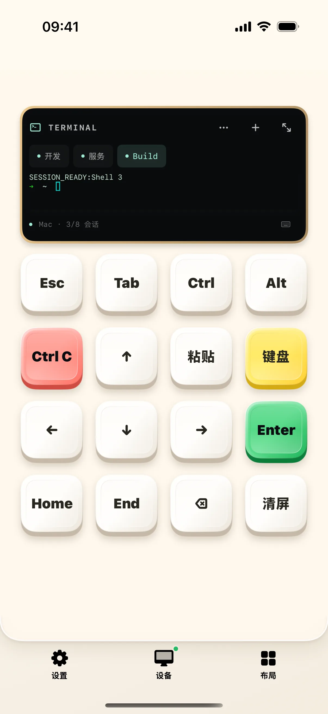
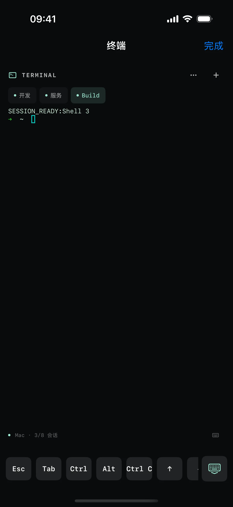

用终端布局时，先分清“切换会话”和“关闭会话”。本教程新建一个练习会话，把它改名为 Build，打开全屏查看，再结束这个临时会话。
开始前准备
- iPhone / iPad 安装奶猫妙控 1.2.0，Mac 安装同版本配套端；完成配对，并允许 Mac 端的辅助功能权限。需要电脑画面时，再开启屏幕录制权限。
- Mac 配套端需要支持终端会话。先使用一个没有重要进程的临时会话练习，不要关闭正在运行任务的会话。
1. 打开终端，认出会话标签
在 App 底部点“布局”，在列表中找到“终端”。布局较多时用搜索框搜索名称；有多个桌面的方案先点右侧箭头展开，再点桌面名称；搜索具体桌面名称也能找到它。
小屏上方是会话标签。截图中的“开发”“服务”来自演示模式；首次连接时，你可能还没有任何会话。不要把这两个名字当成必须提前创建的配置。

2. 点加号，新建临时会话
点会话栏旁的“＋”，等待新标签出现并被选中。已有两个会话时，新会话会命名为 Shell 3；首次新建时通常从 Shell 1 开始，编号以你当前列表为准。
实际连接时，新会话由 Mac 启动 shell。等到提示符出现再输入；长时间没有输出时先检查连接，不要连续点加号堆积空会话。
3. 把练习会话改名为 Build
打开“终端菜单”，点“重命名”。选中原有名称并替换为 Build，再点“保存”。
检查顶部标签变成 Build，且仍处于选中状态。这个名称只是手机端识别会话的标签，不会重命名 Mac 目录，也不会执行构建命令。

4. 全屏打开键盘，运行一个只读检查
点终端的全屏按钮，再点全屏页的键盘按钮。连接真实 Mac 后，先输入 pwd 并回车，查看当前目录；再输入 printf 'tutorial-ok\n' 并回车，检查下一行是否出现 tutorial-ok。
这两个命令用于确认当前目录和输入输出，不创建或删除文件。截图没有执行它们，所以请以你自己的终端输出为准。

5. 切换会话，确认输出保留
收起键盘，点另一个会话标签，再切回 Build。检查 Build 里刚才的输出是否还在。点“完成”返回紧凑终端，当前会话和输出也应保持一致。
离开终端布局不会自动结束 Mac 进程。要暂时去其他布局操作，可以先保留会话，回来后从标签继续。
6. 结束练习会话
先确认 Build 中没有需要保留的进程，再打开“终端菜单 → 关闭会话”，在确认面板中再次选择“关闭会话”。检查 Build 标签消失，其他会话仍可选择。
关闭会话会结束它对应的 shell 及会话进程。只是想隐藏键盘或离开全屏时，使用键盘按钮或“完成”，不需要关闭会话。
操作不符合预期时
新建按钮不可用？
先看是否提示“连接 Mac 后使用终端”或“请更新 Mac 端以使用终端”。连接成功后仍不可用时检查配套端版本与会话数量；每台移动设备最多八个会话。
全屏后文字布局变了，是新开了一个终端吗？
不是。全屏改变终端窗口的行列尺寸，并继续使用同一个会话。交互式命令行程序可能按新尺寸重新绘制。
手机断开后还能看旧输出吗？
已接收的内容可以继续阅读和复制；新命令需要恢复连接。退出 Mac 配套端或主动关闭会话会结束对应会话。
本文按奶猫妙控 1.2.0 的界面与操作编写，更新于 2026 年 9 月 10 日。查看更新日志 · 连接与权限帮助。